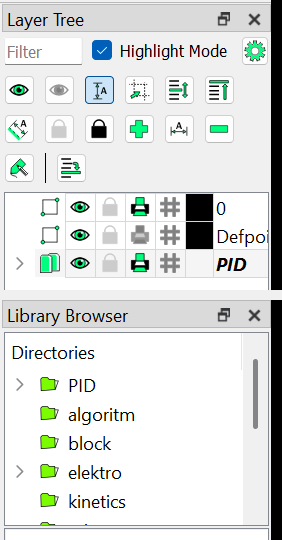

หลักการเขียน P&ID ตาม ISA-5.1 และขั้นตอนเขียนจริงใน LibreCAD รุ่นแพตช์ (Kai) ด้วยไลบรารีสัญลักษณ์ แม่แบบ และปลั๊กอินเส้นสัญญาณที่ทำไว้ให้ชุดนี้
อ่านอย่างไร · บทที่ 1–6 เป็นหลักการ ใช้กับโปรแกรมไหนก็ได้ · บทที่ 7 เป็นวิธีตั้งค่าและขั้นตอนเขียนใน LibreCAD · บทที่ 8 คือแบบตัวอย่างพร้อมคำอธิบายและรายการตรวจ
คำในวงเล็บเป็นชื่อภาษาอังกฤษที่ใช้ในแบบและในเมนูของ LibreCAD · ขนาดทั้งหมดเป็นมิลลิเมตรบนกระดาษ
P&ID (Piping & Instrumentation Diagram) คือแบบที่บอกว่าระบบหนึ่งมีท่อ อุปกรณ์ วาล์ว เครื่องวัด และระบบควบคุมอะไรบ้าง ต่อกันอย่างไร และควบคุมกันอย่างไร โดยไม่สนตำแหน่งหรือระยะจริง (ไม่ตามมาตราส่วน · NTS)
| เรื่อง | PFD (Process Flow Diagram) | P&ID |
|---|---|---|
| จุดประสงค์ | ภาพรวมกระบวนการ สมดุลมวลและพลังงาน | รายละเอียดสำหรับสร้าง เดินเครื่อง และซ่อมระบบ |
| อุปกรณ์ | อุปกรณ์หลักเท่านั้น | ทุกตัว รวมปั๊มสำรอง ตัวกรอง ถังเล็ก |
| ท่อ | เส้นทางไหลหลัก | ทุกเส้น พร้อมขนาดและเลขท่อ |
| วาล์ว เครื่องวัด | เฉพาะตัวที่สำคัญต่อการควบคุม | ทุกตัว พร้อม tag และชนิดสัญญาณ |
| ข้อมูลสภาวะ | อุณหภูมิ ความดัน อัตราไหล ตามจุด | ไม่ใส่ (อยู่ในเอกสาร datasheet) |
ควรมี
ไม่ควรมี (อยู่ในเอกสารอื่น)
ระบบหนึ่งมักมีหลายแผ่น แผ่นแรกเป็น legend (คำอธิบายสัญลักษณ์และตัวย่อ) แผ่นถัดไปแยกตามระบบ และแผ่นที่ต่อกันใช้ป้ายต่อแผ่นชี้หากัน
สัญลักษณ์เครื่องวัดและตัวอักษร tag ในคู่มือนี้ยึด ISA-5.1 ซึ่งใช้แพร่หลายในงาน process ส่วนสัญลักษณ์วาล์วและอุปกรณ์อิงแบบที่ใช้กันทั่วไป (เทียบกับตารางสัญลักษณ์ของ geminivalve.com) มาตรฐานอื่นที่อาจเจอคือ ISO 10628 และ ISO 14617 ซึ่งนิยมในยุโรป
ถ้าโครงการหรือลูกค้ามี legend ของตัวเอง ให้ยึด legend นั้นก่อนคู่มือนี้เสมอ และแนบ legend ไปกับชุดแบบทุกครั้ง
| เส้น | หนา มม. |
|---|---|
| ท่อ process หลัก | 0.70 |
| อุปกรณ์หลัก กรอบแบบ | 0.50 |
| วาล์ว เครื่องวัด ท่อรอง เส้นต่อเครื่องวัด | 0.35 |
| เส้นสัญญาณ ตัวอักษร เส้นแบ่งช่อง | 0.25 |
| ตัวอักษร (ฟอนต์ iso ตัวพิมพ์ใหญ่) | สูง มม. |
|---|---|
| ชื่อแบบในกรอบชื่อแบบ | 4.0 |
| tag อุปกรณ์ เช่น P-101A | 3.0 |
| tag ในวงกลมเครื่องวัด เช่น TIC 105 | 2.5 |
| เลขท่อ หมายเหตุ คำอธิบาย | 2.2–2.5 |
ค่าเหล่านี้ตั้งไว้ใน layer ของแม่แบบแล้ว (บทที่ 7) วาดบน layer ที่ถูกต้อง ความหนาก็ถูกเอง
เส้นที่ไม่ต่อกันต้องเว้นช่องที่จุดตัด ไม่อย่างนั้นคนอ่านจะไม่รู้ว่าต่อหรือไม่ต่อ ปกติให้เส้นรองหรือเส้นที่วาดทีหลังเป็นฝ่ายเว้น จุดต่อจริงทำเป็นตัว T และไม่ทำสี่แยก เพราะถ้าพิมพ์ไม่ชัดจะดูเหมือนเส้นตัดผ่านกัน
ann_offpage ที่ปลายเส้น ชี้ไปทางที่ท่อไป| ตัววาล์ว ยาว × สูง | 6 × 3.6 | เช็ควาล์ว ยาว | 4 |
| ก้าน actuator จากกลางวาล์ว | 4 | หัวขับ กว้าง | 3.2–3.6 |
| วงกลมเครื่องวัด | 10 | ปั๊ม เส้นผ่านศูนย์กลาง | 8 |
| ลูกศรทิศการไหล ยาว | 2.5 | ป้ายต่อแผ่น กว้าง × สูง | 20 × 6 |
เส้นในแบบมีสองพวก ท่อคือทางที่ของไหลวิ่งจริง ส่วนเส้นสัญญาณบอกว่าเครื่องวัด ตัวควบคุม และวาล์ว ส่งข้อมูลหรือคำสั่งถึงกันด้วยอะไร
{{SIGNALS}}"ตัดเส้น" คือปลั๊กอินตัดเส้นใต้สัญลักษณ์ยาวตามค่า gap ใน pidlines.ini (มม. ที่สเกล 1) · "ไม่ตัด" คือวางทับเส้น
100 - CWS - 102
100 ขนาด DN (มม.) · CWS รหัสบริการ · 102 ลำดับท่อในระบบ
ขยายต่อได้ตามที่บริษัทใช้ เช่น 100-CWS-102-A1-N (A1 = spec ท่อ, N = ไม่มีฉนวน)
ann_flow วางบนท่อหลังจุดแยกและก่อนเข้าอุปกรณ์| CWS / CWR | น้ำหล่อเย็น จ่าย / กลับ |
| HWS / HWR | น้ำร้อน จ่าย / กลับ |
| CHWS / CHWR | น้ำเย็นจาก chiller จ่าย / กลับ |
| MW | น้ำเติมระบบ (make-up) |
| IA / PA | ลมเครื่องมือวัด / ลมใช้งานทั่วไป |
| ST / CD | ไอน้ำ / คอนเดนเสท |
| DR / VT | ท่อระบายน้ำทิ้ง / ท่อระบายอากาศ |
| N2 | ไนโตรเจน |
เป็นตัวอย่างที่นิยมใช้ ถ้าบริษัทมีรายการรหัสอยู่แล้วให้ใช้ของบริษัท และเขียนไว้ใน legend
วาล์วทุกตัววางบนแนวท่อ จุดแทรกอยู่กลางวาล์ว ยาว 6 มม. (เช็ควาล์ว 4 มม.) และต้องตัดท่อใต้วาล์วออก ด้วยคำสั่ง Line Gap (บทที่ 7) วาดบน layer PID-VALVE
{{SYM_VALVES}}รูปที่แต่ละแหล่งวาดไม่เหมือนกัน เช่น gate valve บางบริษัทวาดเป็นรูปโบว์เปล่า ให้ใช้ตาม legend ของโครงการ
และถ้าไม่แน่ใจว่าเป็นวาล์วชนิดไหน ใช้ vlv_generic แล้วเขียนชนิดไว้ข้างวาล์ว
| วาล์ว | เหมาะกับ | วาล์ว | เหมาะกับ |
|---|---|---|---|
| gate | เปิดสุดหรือปิดสุด (isolation) ไม่ใช้หรี่ | globe | หรี่ ปรับอัตราการไหล |
| ball / plug | เปิด-ปิดเร็ว 1/4 รอบ | butterfly | ท่อใหญ่ เปิด-ปิด หรือปรับหยาบ |
| check | กันไหลกลับ เช่น ด้านส่งของปั๊ม | needle | ปรับละเอียด สายเครื่องวัด |
| diaphragm / pinch | ของเหลวสกปรก ตะกอน กัดกร่อน | relief (PSV) | กันความดันเกิน ห้ามมีวาล์วปิดขวาง |
แทรกตัววาล์วก่อน แล้วแทรก actuator ที่จุดเดียวกัน ก้านเริ่มที่กลางวาล์ว วาล์วควบคุม โซลินอยด์วาล์ว และวาล์วมอเตอร์มีแบบประกอบเสร็จในหมวด 1 Valves แล้ว ส่วนที่เป็นสีเทาในตารางคือตัววาล์วที่ไว้ให้เห็นตำแหน่ง
{{SYM_ACTUATORS}}| ตัวอักษร | วาล์วจะ | วาดอย่างไร | ใช้เมื่อ (ตัวอย่าง) |
|---|---|---|---|
| FO | เปิด (fail open) | ลูกศรบนก้านชี้ขึ้น act_fail_open | ปิดแล้วอันตราย เช่น น้ำหล่อเย็น |
| FC | ปิด (fail closed) | ลูกศรชี้ลงหาวาล์ว act_fail_closed | เปิดค้างแล้วอันตราย เช่น ไอน้ำ เชื้อเพลิง |
| FL | ค้างตำแหน่งเดิม (fail locked) | ตัวอักษร act_label_fl | ขยับแล้วรบกวนกระบวนการ |
| FI | ไม่แน่นอน (fail indeterminate) | ตัวอักษร act_label_fi | วาล์วที่ตำแหน่งตอนดับระบุไม่ได้ |
เลือกตำแหน่งตามความปลอดภัยของกระบวนการ ไม่ใช่ตามความสะดวก ใส่ทั้งลูกศรและตัวอักษรก็ได้ (แบบตัวอย่างใส่ทั้งคู่ที่ TV-105)
วางชิดปลายวาล์วทั้งสองข้างเมื่ออยากบอกชนิดการต่อ ถ้า spec ท่อกำหนดการต่อไว้แล้ว ไม่ต้องใส่ทุกวาล์ว
อุปกรณ์ไม่ต้องตามมาตราส่วน แต่ควรมีขนาดสัมพันธ์กัน ขยายได้ตอนแทรก (factor 1.2–2) วาดบน layer PID-EQUIP
{{SYM_EQUIPMENT}}| P | ปั๊ม เช่น P-101A, P-101B |
| C / K | คอมเพรสเซอร์ |
| B / FN | โบลเวอร์ พัดลม |
| E | เครื่องแลกเปลี่ยนความร้อน |
| CT | หอผึ่งเย็น |
| T / TK · V | ถังเก็บ · ถังความดัน ดรัม |
| F · STR | ตัวกรอง · ตะแกรงกรอง |
| M | มอเตอร์ หรือเครื่องจักร |
เครื่องวัดแต่ละตัวเขียนเป็นสัญลักษณ์ขนาด 10 มม. (ISA-5.1) รูปทรงบอกว่าเป็นอุปกรณ์แบบไหน เส้นกลางบอกว่าติดตั้งหรือแสดงผลที่ไหน วาดบน layer PID-INST
{{IMATRIX}}สัญลักษณ์บอกหน้าที่และตำแหน่ง ไม่ใช่รูปร่างของเครื่องวัดจริง ค่าที่แสดงบนจอ HMI ใช้วงกลมในสี่เหลี่ยม ฟังก์ชันที่ทำใน PLC ใช้ข้าวหลามตัดในสี่เหลี่ยม เครื่องวัดหน้างานใช้วงกลมเปล่า
tag เริ่มด้วยอักษรตัวแรกบอกตัวแปรที่วัด (ตามด้วยตัวขยายถ้ามี) แล้วตามด้วยอักษรบอกหน้าที่ และเลขลูป เช่น TIC-105 = Temperature · Indicating · Controller ลูป 105 · PDI-102 = Pressure · Differential · Indicator · LSL-108 = Level · Switch · Low
{{LETTERS}}ตัวขยายของหน้าที่: H สูง · L ต่ำ · M กลาง · HH, LL สูงมาก ต่ำมาก · "เลือกเอง" คืออักษรที่โครงการกำหนดความหมายเองได้ แล้วต้องเขียนไว้ใน legend · ตารางนี้ย่อจาก ISA-5.1 เหลือเฉพาะความหมายที่ใช้บ่อย
| tag | ตัวแปร | ตัวขยาย | หน้าที่ | ตัวขยายหน้าที่ | ความหมาย |
|---|---|---|---|---|---|
| TIC | T | I C | แสดงค่าและควบคุมอุณหภูมิ | ||
| FQI | F | Q | I | แสดงยอดรวมการไหล (totalizer) | |
| PDT | P | D | T | ส่งสัญญาณผลต่างความดัน | |
| LSL | L | S | L | สวิตช์ระดับต่ำ | |
| TAHH | T | A | HH | เตือนอุณหภูมิสูงมาก | |
| PSV | P | S | V | วาล์วนิรภัยความดัน | |
| XV | X | V | วาล์วเปิด-ปิดที่ไม่เข้าหมวดอื่น (on/off) | ||
| TY | T | Y | อุปกรณ์เสริมในลูปอุณหภูมิ เช่น ตัวแปลง I/P |
| FT · FE | ส่งสัญญาณอัตราไหล · ตัวตรวจจับอัตราไหล |
| FQI | แสดงยอดรวมการไหล |
| TT · TI · TW | ส่งสัญญาณ · แสดง อุณหภูมิ · ปลอกวัด |
| PT · PI · PDI | ความดัน · ผลต่างความดัน (คร่อมตัวกรอง) |
| LT · LG · LSL | ระดับ · หลอดดูระดับ · สวิตช์ระดับต่ำ |
| TIC · LIC · FIC | ตัวควบคุมอุณหภูมิ ระดับ อัตราไหล |
| TV · FV · LV | วาล์วควบคุมของลูปนั้น |
| PSV · PCV | วาล์วนิรภัย · เรกูเลเตอร์ความดัน |
| XV · ZSO / ZSC | วาล์วเปิด-ปิดอัตโนมัติ · สวิตช์บอกตำแหน่ง |
| HS · TY | สวิตช์มือ · ตัวแปลงสัญญาณ (เช่น I/P) |
| AT · ST · JT | วิเคราะห์ (pH ฯลฯ) · ความเร็วรอบ · กำลังไฟ |
| จาก → ถึง | สัญญาณที่ใช้กันบ่อย | เส้นในแบบ |
|---|---|---|
| transmitter → PLC / ตัวควบคุม | ไฟฟ้า 4-20 mA หรือ on/off | เส้นประ (layer PID-SIGNAL-ELEC) |
| PLC → ตัวแปลง I/P → วาล์วควบคุม | ไฟฟ้า แล้วเปลี่ยนเป็นลม 20-100 kPa | เส้นประ แล้วต่อด้วยเส้นลาย // |
| PLC → โซลินอยด์วาล์ว | ไฟฟ้า on/off | เส้นประ ถึงกล่อง S |
| PLC ↔ จอ HMI ในระบบเดียวกัน | สื่อสารข้อมูลภายในระบบ | ลิงก์ข้อมูลจุดขาว —o— |
| PLC ↔ ระบบอื่น (SCADA, IoT gateway, PLC อีกตัว) | สื่อสารระหว่างระบบอิสระ | ลิงก์ข้อมูลจุดดำ —●— |
| หัววัดอุณหภูมิแบบเติมของเหลว → เกจ | ท่อ capillary | เส้นลาย X |
| Documents\LibreCAD\library\PID\ | ไลบรารีสัญลักษณ์ 6 หมวด (เปิดจาก Library Browser) |
| Documents\LibreCAD\templates\ | แม่แบบ PID_A3.dxf PID_A4.dxf และแบบตัวอย่าง PID_example_cooling_water.dxf |
| Documents\LibreCAD\plugins\ · pidlines\ | ปลั๊กอิน PID signal line และไฟล์ลาย |
| Documents\ | คู่มือเล่มนี้ PID_drafting_guide.pdf และคู่มือปลั๊กอิน PID_signal_line_manual_A4.pdf |
PID_A3.dxf แล้ว File → Save As ตั้งชื่อใหม่ทันที เพื่อไม่ให้ทับแม่แบบสี 7 เป็นสีขาวบนพื้นจอดำ และพิมพ์ออกเป็นดำ · สีของ layer ไว้แยกดูบนจอ ตอนพิมพ์ใช้โหมดขาวดำ
- layer ของแม่แบบจึงอยู่ใต้กลุ่ม PID
(PID ▸ PIPE ▸ MAIN) กดลูกศรหน้า PID เพื่อกางออกiso สำหรับอังกฤษและตัวเลข thsarabunnew สำหรับไทย
LibreCAD ใช้ชื่อ style เป็นชื่อฟอนต์
PID-EQUIP · Library Browser → PID → 4 Equipment → เลือกสัญลักษณ์ → Insert
→ ตั้ง Angle และ Factor ในแถบตัวเลือก → คลิกจุดวางบน gridPID-PIPE-MAIN · Tools → Line → 2 Points (คำสั่ง li) ลากเป็นเส้นตรงทีละช่วง
ใช้ LINE ไม่ใช้ polyline เพราะ Line Gap ตัดได้เฉพาะ LINEPID-VALVE · แทรกวาล์วที่จุดบนท่อ แล้วใช้ Tools → Modify → Line Gap (คำสั่ง gl)
ตั้ง Gap size 6 (เช็ควาล์ว 4) · Line snap Free · Gap snap Middle แล้วคลิกที่กลางวาล์วvlv_control vlv_solenoid vlv_motorPID-INST · แทรกสัญลักษณ์ให้จุดศูนย์กลางอยู่บน grid แล้วลากเส้นต่อจากท่อบน layer PID-PIPE-MINOR ถึงขอบวงLine snap = Free คือใช้จุดที่คลิก · Gap snap = Middle คือให้จุดที่คลิกเป็นกลางช่อง ถ้าวาล์ววางบน grid ก็คลิกจุด grid เดิม ช่องจะพอดีกับวาล์ว · ใช้ค่าเดียวกันเว้นช่องเส้นตัดกัน (Gap size 2)
วาดตามลำดับนี้ทั้งแผ่นทีละชั้น ไม่ต้องทำให้เสร็จทีละจุด จะจัดระยะง่ายกว่า และไม่ต้องย้ายวาล์วกับเครื่องวัดตามท่อบ่อย
PID-TEXT · Tools → Dimension → Text (คำสั่ง tx) style iso สูง 2.5
จัด Middle Center วางที่ +2 และ −2 มม. จากศูนย์กลางวง (ตั้ง grid 1 มม. ชั่วคราวจะคลิกง่าย) · tag อุปกรณ์สูง 3PID-SIGNAL-ELEC ลากเส้นธรรมดา เป็นเส้นประเอง ·
ลม ข้อมูล และอื่นๆ: layer PID-SIGNAL ลากเส้น → เลือกเส้น → Plugins → P&ID signal line
→ เลือกลาย ระยะห่าง 12 สเกล 1 → OK → Enterann_flow หมุนตามทิศการไหล ·
ป้าย CWS CWR HWS HWR ใช้ปลั๊กอินบนท่อ ระยะห่าง 40| li | ลากเส้น (line) | gl | เว้นช่องในเส้น (line gap) | tx | ข้อความ (text) |
| mv | ย้าย (move) | ro | หมุน (rotate) | mi | สะท้อน (mirror) |
| tm | ตัดเส้นถึงขอบ (trim) | mo | เส้นขนาน (offset) | ma | เปลี่ยน layer สี เส้น (attributes) |
| er | ลบ (erase) | id | วัดระยะ (distance) | za | ซูมเห็นทั้งแบบ |
ข้อควรระวัง
pid_ ปลั๊กอินจะถือว่าเป็นลายของมัน และลบทิ้งตอนวางลายซ้ำบนเส้นนั้นแบบตัวอย่าง PID-EX-001 ย่อจาก A3 · ไฟล์ Documents\LibreCAD\templates\PID_example_cooling_water.dxf เปิดใน LibreCAD แล้วแก้ต่อได้
น้ำเย็นจากอ่างของหอผึ่งเย็น CT-101 ไหลลงท่อ 100-CWS-101 ไปที่ปั๊ม P-101A (ทำงาน) หรือ P-101B (สำรอง) ผ่านตัวกรอง STR-101 และวาล์วควบคุม TV-105 เข้าเครื่องแลกเปลี่ยนความร้อน E-101 แล้วกลับขึ้นหอผึ่งเย็นทางท่อ 100-CWR-103 อีกด้านของ E-101 คือวงจรน้ำของเครื่องจักร M-201 (HWS เข้า HWR กลับ)
| tag | คืออะไร | สังเกตในแบบ |
|---|---|---|
| P-101A / P-101B | ปั๊มทำงาน / สำรอง | มี gate valve ด้านดูด เช็ควาล์วกับ gate valve ด้านส่ง และ PI ด้านส่ง |
| STR-101 · PDI-102 | ตัวกรอง Y กับเกจผลต่างความดัน | PDI ต่อคร่อมตัวกรองสองจุด บอกว่าตะแกรงตันหรือยัง |
| FT-103 → FI-103 | วัดอัตราไหล แสดงบน HMI | สัญญาณไฟฟ้าเส้นประ วงกลมในสี่เหลี่ยมมีเส้นเดี่ยว = จอในห้องควบคุม |
| TT-104, TT-106 | อุณหภูมิน้ำจ่าย / น้ำกลับ | แสดงบน HMI (TI-104, TI-106) ใช้ดูภาระความร้อน |
| TT-105 → TIC-105 → TY-105 → TV-105 | ลูปคุมอุณหภูมิน้ำเข้าเครื่องจักร | TIC อยู่ใน PLC · TY แปลงเป็นลม (//) · TV เป็น FO เพราะขาดน้ำหล่อเย็นอันตรายกว่า · สัญญาณข้ามท่อมีช่องเว้น |
| LSL-108 → XV-109 | ระดับน้ำในอ่างต่ำ สั่งเปิดวาล์วเติมน้ำ | XV-109 เป็นโซลินอยด์วาล์วบนท่อ MW · สัญญาณข้ามท่อเติมน้ำมีช่องเว้น |
| TI-107 | เทอร์โมมิเตอร์หน้างาน | วงกลมเปล่า = อุปกรณ์หน้างาน ไม่ส่งสัญญาณ |
| CWR · HWS · HWR | ป้ายบอกน้ำบนท่อ | วางด้วยปลั๊กอิน ตัดท่อใต้ตัวอักษร · อธิบายไว้ใน LEGEND มุมขวาบน |
ISA-5.1 Instrumentation Symbols and Identification · ตารางสัญลักษณ์ geminivalve.com/pid-valve-symbols (ใช้เทียบรูปแบบ) · ซอร์สของไลบรารี แม่แบบ แบบตัวอย่าง และคู่มือนี้: github.com/House41M5/LibreCAD สาขา kai/thai-fonts-2216 โฟลเดอร์ plugins/pidlines/library และ guide